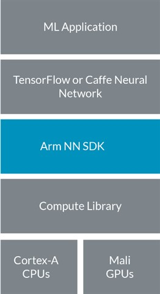
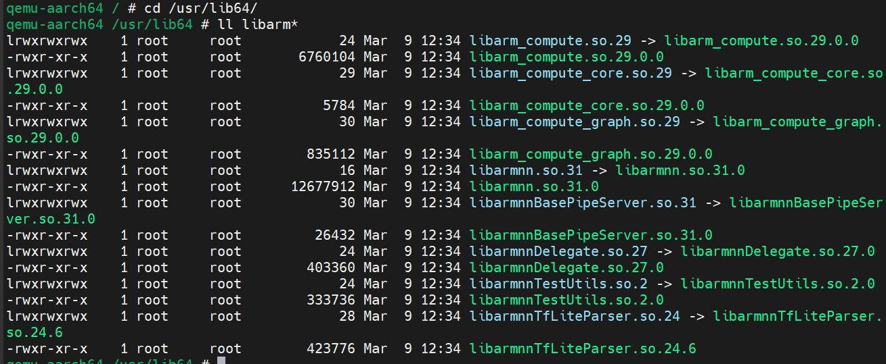
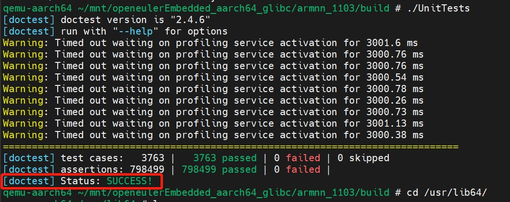
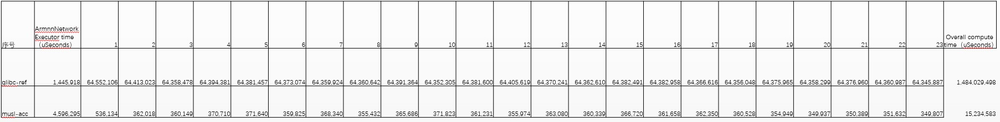
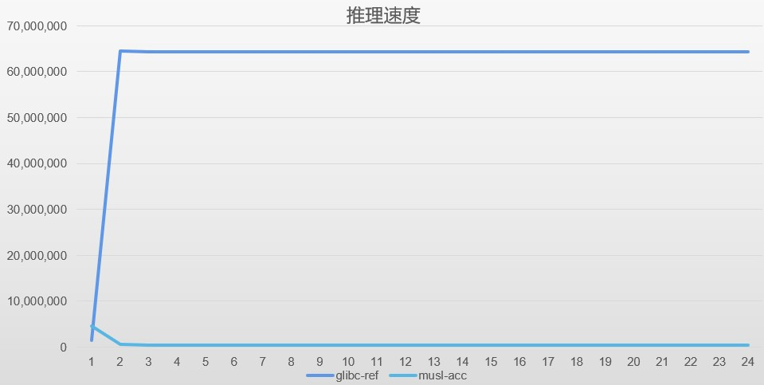
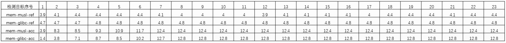
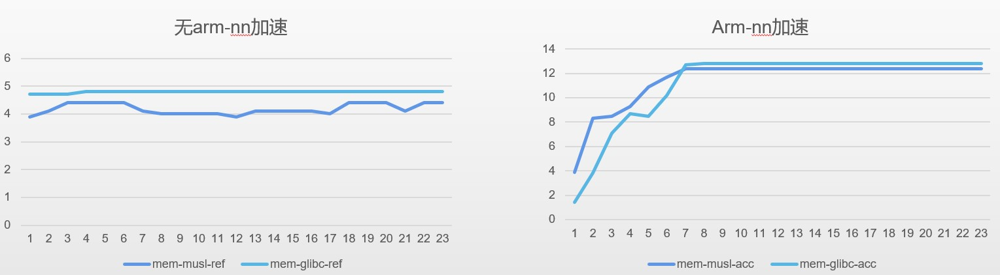

ArmNN的支持¶
本章主要介绍openEuler Embedded中ArmNN的特性、使用和构建。
ArmNN介绍¶
Arm NN SDK 是一套开源 Linux 软件和工具，支持在高能效的设备上运行机器学习工作负载。它桥接了现有神经网络框架与高能效的Arm Cortex CPUs、Arm Mali GPU 或 Arm 机器学习处理器。

如上图所示，Arm NN填补了现有NN框架和底层IP之间的空白。它可以帮助TensorFlow 和 Caffe等现有神经网络框架实现高效转换，并在Arm Cortex CPU和Arm Mali GPU上高效运行，无需修改。
Arm NN SDK 运用 Compute Library，以 Cortex-A CPU和Mali GPU等可编程内核为目标，尽可能提高效率。其中包括为Arm机器学习处理器提供支持，以及通过CMSIS-NN 为Cortex-M CPU提供支持。
Arm NN先将这些框架中的网络转换为内部Arm NN格式，然后通过Compute Library 将它们高效地部署在Cortex-A CPU和Mali-G71及Mali-G72等Mali GPU上（如果存在后者的话）。
主要优势
更轻松地在嵌入式系统上运行 TensorFlow和Caffe；
Compute Library 内部的一流优化函数，让用户充分发挥底层平台的强大性能；
无论面向何种内核类型，编程模式都是相同的；
现有软件能够自动利用新硬件特性；
作为开源软件，能够相对简单地进行扩展，从而适应Arm合作伙伴的其他内核类型。
构建指导¶
ArmNN软件兼容 yocto-meta-openeuler 上做了很多准备工作，如 tensorflow的适配，Compute Library的适配，flatbuffers的使用等。openEuler Embedded ArmNN的代码位于 meta-openeuler/recipes-arm层上，社区开发者可根据需要自行构建 ArmNN软件，如构建一个在 arm64 架构下使用的 ArmNN工具。
示例：如何让 openeuler-image 构建添加ArmNN软件。
步骤1
修改meta-openeuler/recipes-core/packagegroups/packagegroup-base.bb 文件，在 RDEPENDS:packagegroup-base 中加入 armnn 包：
RDEPENDS:packagegroup-base = " \ acl \ armnn \ attr \ ...接下来按照官方 安装步骤 指导构建使用即可。
步骤2
将以上生成的系统镜像进行烧录，部署后验证ArmNN软件可用性。
cd /usr/lib64/ ll libarm*
可通过单元测试程序 UnitTests 验证ArmNN库的可用性：
cd /usr/bin/ UnitTests注：部分测试用例需用到armnn的编译输出文件“./armnn/22.11-r0/build/src/”，将“src”放置系统”/usr/bin”下再执行“UnitTests”，否则测试用例部分不通过。
如下图所示，则表示测试用例都通过，ArmNN库可用。

使用说明¶
ArmNN软件使用详见 ArmNN Documentation 。
AI推理性能验证结果¶
以目标检测为示例，验证ArmNN的推理加速效果： 1）模型：yolov3 tiny（FLOAT32量化）
2）训练数据：COCO
3）测试数据：640*480 H264视频
ArmNN推理速度


由以上图可得，在模型初始化和加载阶段，Ref模式比Acc模式快近4倍，但是在数据推理阶段，Acc模式比Ref模式有两个数量级的提升，可见硬件指令加速对于推理速度有极大的提升。
ArmNN内存占用率


由上图可得，Acc情况下，空间占用率要比Ref高，体现了用空间换时间的优化原则。
Note
glibc-ref是指基于GlibC的Openeuler Embedded且不做任何加速，musl-acc是指基于MuslC的Openeuler Embedded且使能ArmNN的指令加速和优化。